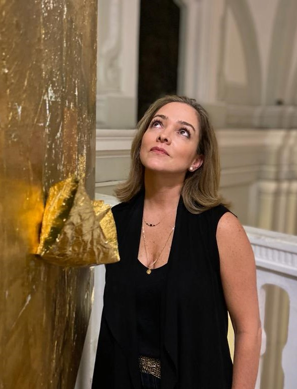

"I am enthralled by the spontaneous and lyrical interplay of paint, layers, texture and movement on the canvas. My abstract work is based on a purely intuitive process that is expressed through the use of a lot of color. I dig, scrape, drip, and spray paint, allowing the composition to reveal itself organically with each brush stroke and mark, achieving a myriad of palpable moods. Similar to an archaeologist digging for treasures, I find unique worlds within each painting. All my works of art embrace the accidental, however, at the end, all gestural expressions are very much intentional, carrying intensive emotion, rapture and the unrestrained."
Maria Olga Pinto
"I am an artist who practices plastic arts such as painting and sculpting, specialized on the sculpting of a variety of rock types. Painting and sculpting form the bridge between my essence and the stone or canvas. My work is influenced by music, nature, and movement itself, combining different textures and materials. I use colors which suggest intense emotions and combine my work with painted metals that suggest the passing of time. I direct myself to people with sensibility towards nature and its organic shapes; people who imagine beyond what is embodied and let themselves be guided by the rhythm and movement, either through touch or sight."
Rosana Lagos
"My name is Rosana Maria Lagos Salvatierra, I was born in
beautiful Managua, Nicaragua in midst of the Sandinista
Revolution. Wanting a better future for my brothers and me,
my parents migrated to Costa Rica and later Guatemala, where
we finally settled and now I proudly call home base. All of
Central America is gorgeous, but Guatemala has an extra
richness thanks to the Mayan heritage, where colors in their
traditional textiles and landscapes meet to give your eyes a
feast of bright colors.
Memories from traveling since young and coloring with
crayons in preschool in Guatemala, are engraved in my mind
and determined my passions and path in life. Traveling and
painting.
As a half full and overflowing type person, my motifs in art
are usually uplifting, full of color and inspired in places I’ve
physically and mentally have traveled to. Playing with tones
and contrasts is my forte and no matter what the style and
canvas are, the essence is always reflected."
Michelle Edwards
"I am experienced in painting, digital art, animations and film."
Ana Arcia

"I work with textiles, new and recicled materials, fabric leftovers, fibers and threads, domestic detritus, metals, gold leaf and silver. With my looms and hands, I leave my mark while sewing, knitting, cutting and linking; revealing defects and showing imperfection. Mi work knits diverse stories and creates a new meaning for the occupation of sewing and knitting--that has been categorized as pejorative--and brings back themes like memory, remembrance, the past, our childhoods and the preestablished role of women in society. Apart from this, my work helps the environment."